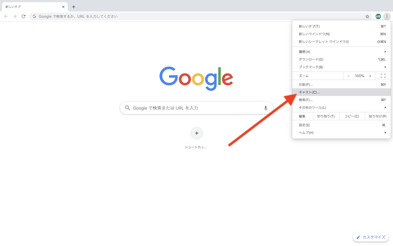

今回はゼミ中に自分のデバイスをミラーリングすることができるChromeキャストの使い方をまとめます。
Chromeキャストを使うことによって大人数にアウトプットを共有することができます。
・Mac OS 10.9(2013年)以降、Windows 7以上を搭載のデバイス（iOSは不可）
・ウェブブラウザ「Google Chrome」
・Google Chrome は Mac、Windows共に www.google.com からダウンロードできます。
・接続するWi-Fiを「doyolab」にする。←重要！
これからの操作は全てGoogleChromeで行います。
この時にWi-Fiがdoyolabに繋がっていないと表示されません。
・タブをキャスト：開いているタブをキャスト
・デスクトップをキャスト：デバイスの全画面をキャスト ←推奨！
・ファイルをキャスト：動画や音声をキャスト